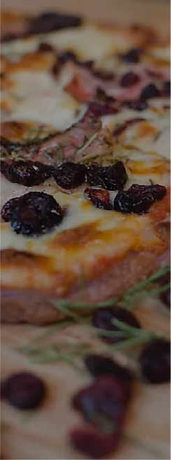
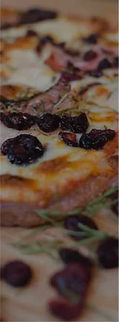
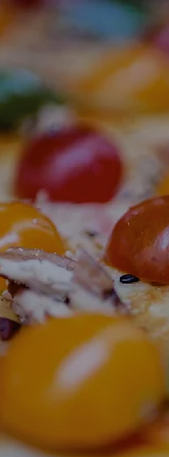
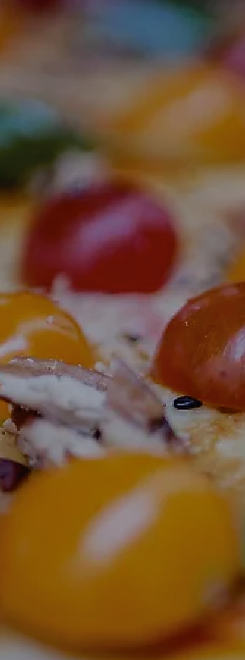

MAÍZ
MORADO
El maíz morado ha crecido
en Perú durante miles de
años.
Nosotros infusionamos
chicha morada en nuestra
masa para obtener su rico
contenido de antioxidantes,
vitaminas y minerales.
QUINOA
La quinua es una de las
comidas más saludables y
nutritivas del planeta y
puedes preparar fácilmente
muchos platos como
sopas, ensaladas, postres y
porque no? en una masa de
pizza.
CAÑIHUACO
La cañihua se caracteriza
por tener un alto contenido
de proteínas y fibra. Posee
capacidades antioxidantes,
gracias a sus compuestos
fenólicos, y debido a su
contenido alto en proteína,
puede contribuir a que se
conserve o aumente la
masa muscular
GLUTEN
FREE
¿intolerante al Gluten?
¡Puedes disfrutar
plenamente cualquiera de
nuestras pizzas en masa
Gluten Free sin
preocuparse por las
consecuencias!


 
